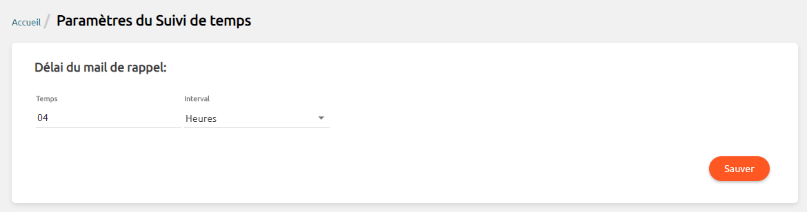
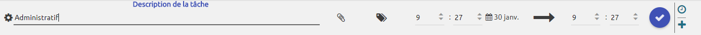

Time Tracking
Suivez en temps réel les temps d'activité de chacun de vos collaborateurs, par tâche et par projet, et obtenez des synthèses significatives et détaillées.
Idéal pour l\'organisation du travail et pour disposer d'une vue globale de l\'activité de chacun des membres de votre équipe.
Le collaborateur, lors d'une nouvelle tâche sur un projet, peut déclencher un chronomètre en début d\'activité, et l'arrêter selon ses besoins ou contraintes, ou bien tout simplement lorsque la tâche est terminée.",

